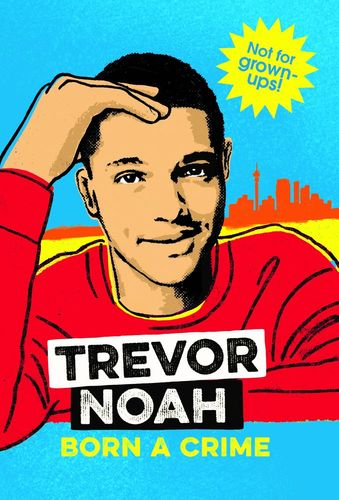

In Born a Crime: Stories from a South African Childhood, comedian and television personality
Trevor Noah gives a heartfelt and funny recounting of his experiences growing up in South
Africa as an oppressed person. Stories of Noah’s life are interspersed with insights
into South Africa’s culture, systems, and history. Noah was born in 1984 to a single mother,
Patricia, during the time of racial segregation known as apartheid. Patricia was a strong,
driven woman who paid little heed to the racist laws that oppressed her. Noah’s father,
Robert, agreed to give Patricia a child during a time when sexual relationships between
black and white South Africans were illegal. Robert, a Swiss immigrant, never supported segregation
and did what he could to undermine apartheid. Because it was dangerous for Patricia and Robert to be
seen with their mixed-race child, Noah recalls sometimes being momentarily abandoned by his parents in public settings.
Dutch colonizers came to South Africa in the 1600s and used slave labor to run their farms on stolen
land. The white South Africans called Afrikaners are descended from these colonizers. Black South Africans,
from tribes including the Zulu, Xhosa, and Sotho tribes, were subjugated under apartheid law until the
mid-1990s. A third racial group emerged from the intermingling of the Black and white South Africans:
mixed-race or “colored.” Both during apartheid and after its dissolution, mixed-race South Africans
were the most marginalized and disenfranchised people. Noah often felt defined by what he wasn’t:
not light enough to be labeled as white and not dark enough to be fully accepted into Black culture.
Apartheid ended in 1994, but Noah’s struggles as a mixed-race child in South Africa continued. It was
often hard for Noah to determine which groups would accept him. Patricia had always encouraged her son
to read and think independently; she valued education and made sure that her son spoke multiple languages.
Of the eleven official languages in South Africa, Noah could speak Zulu, Tsonga, English, and Afrikaans.
This skill allowed him to move among different racial and cultural groups at school.
Though Noah felt out of place in many social settings, his ability to talk and empathize with many
different types of people served him well throughout his life. Even at a young age, Noah understood
that the bullying he experienced from his mixed-race peers was likely a result of the self-hatred all
mixed-race South Africans had been taught. Noah was a mischievous child, but Patricia believed in tempering
her punishments with assurances to her son that she held him accountable because she loved him. Patricia
knew that the world would not always be kind and generous to Noah, and she wanted to prepare him well.
During his high school years, Noah acquired a small bootleg CD business from a friend. Noah soon found that he
could make more money working with his friend Sizwe, who was from the poorer, crowded Johannesburg township
called Alexandra—known to most residents as Alex. After graduation Noah moved to Alex to expand his profits,
with Sizwe’s help. Sizwe recognized that Noah had talent as a live DJ, and the pair formed a performance
group. Noah and his group sold bootleg and mixed CDs, dealt in stolen goods, performed at parties and concerts,
and did their best to avoid confrontations with local law enforcement. Noah was already familiar with the
South African police. Patricia received no help from the local police when she tried to file charges against
her abusive husband. Noah was arrested for shoplifting, on suspicion of carrying a weapon, and for driving an
unregistered vehicle. One arrest kept Noah in jail for several days, and Patricia had to pay for his lawyer.
Despite his dealings with law enforcement, Noah could see his own privilege in comparison to many of his peers.
Patricia had worked hard to make sure her son had the ability to make a life for himself.
The men in Noah’s life taught him little about how to interact with women. Robert was a distant but generally pleasant
presence. Patricia’s father, Temperance Noah, was an unpredictable figure. Later, Noah would learn that his
grandfather had bipolar disorder and would often beat his wife, Frances. Patricia experienced abuse in her marriage
as well. Noah’s stepfather, Abel, became acquainted with Patricia and her young son during their many visits to the
automotive shop where Abel worked on their run-down car. After Abel and Patricia married, he bought the shop.
Patricia was forced to sell her home to keep the business running, and the family spent a stressful year living in
the shop warehouse. Abel often came home drunk, and he began beating his wife. Once Abel had sons of his own,
Noah’s half-brothers Andrew and Isaac, Abel’s hostility toward Patricia’s oldest son grew. When Patricia learned that
her violent husband had bought a gun, she helped Noah move out on his own.
One day, Noah received a phone call from Andrew with news that Abel, now estranged from his family, had come to
Patricia’s new house and shot her in the head as she was shielding Andrew and Isaac. Miraculously, Patricia survived.
Noah was able to cover her medical bills, and Patricia thanked God for protecting her and giving her
a son who could afford to help her.